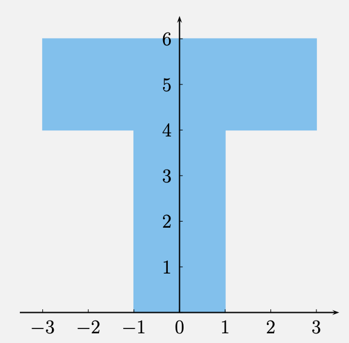
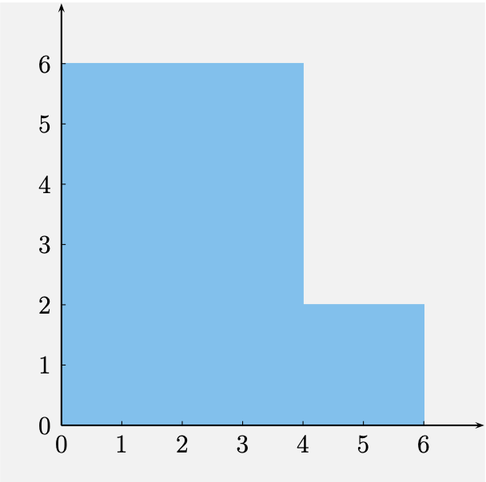

14 - Couteau gamma
Question 1
Trouvez le squelette de toutes les figures ci-dessous. Assurez-vous de bien définir chaque élément du squelette.


Question 2
Trouvez le squelette de la région du plan incluse entre les deux branches de la parabole d’équation \(y(x) = ax^2\), où \(a \in \, ]0, \infty[ .\)
Question 3
Trouvez le squelette d’un triangle arbitraire.
Question 4
Trouvez deux ensembles du plan qui ont le segment \(\{(x, 0) : x \in [-1, 1]\}\) comme squelette.
Question 5
Trouvez deux ensembles du plan qui ont le cercle de rayon 1 centré à l’origine comme squelette.